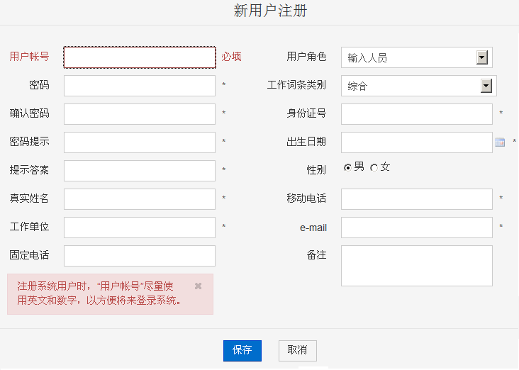
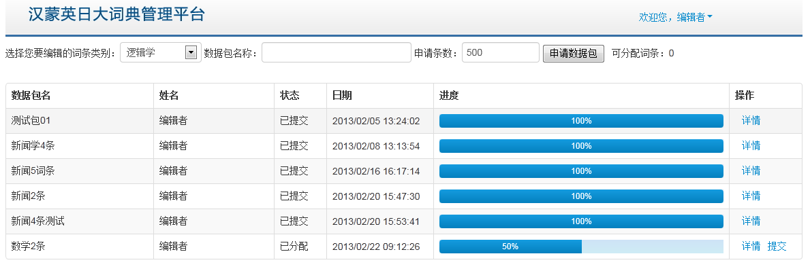
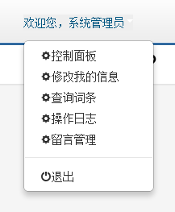
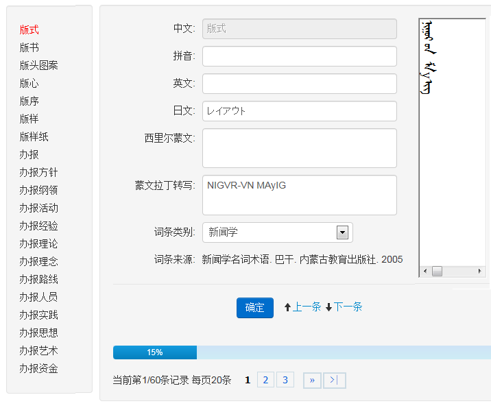
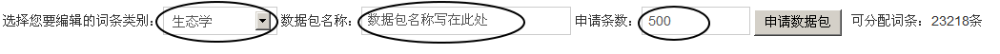
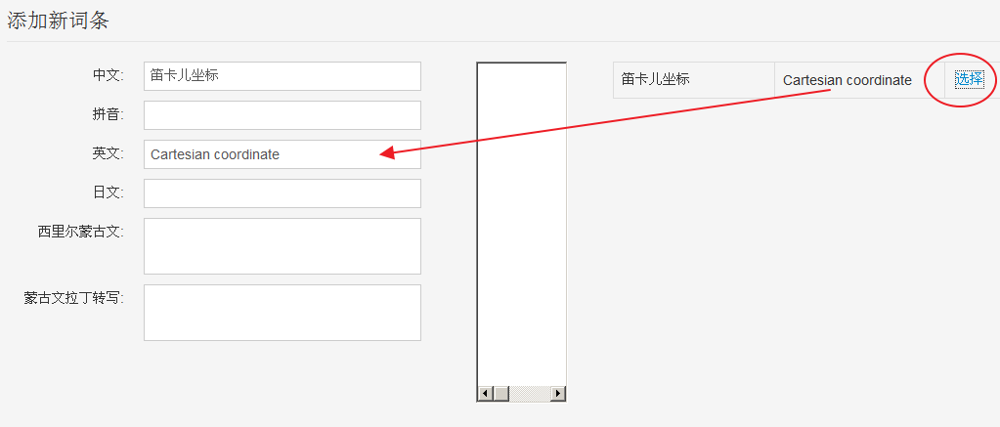
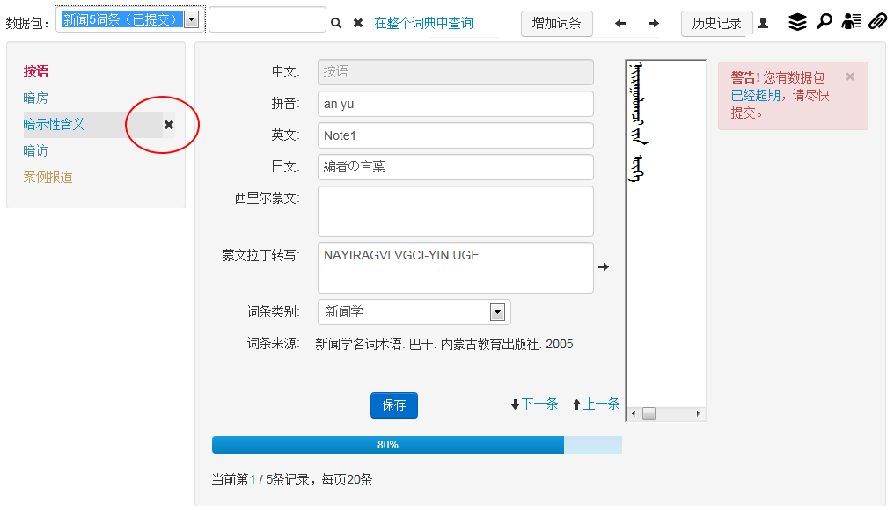

为了能够正常显示和编辑传统蒙古文，需要安装一个传统蒙古文编辑控件。
（1）排版显示控件
下载蒙古文编辑控件 mongbase.zip 到计算机本地硬盘，解压缩后有mongbase.msi和setup.exe两个文件，以管理员身份执行setup.exe文件，安装蒙古文支持基础软件（字库和传统蒙古文编辑控件等）。
（2）OpenType支持和和传统蒙古文显示字库
如果您正在使用windows 7及更高版本，或者您打算升级到windows 7及更高版本的 操作系统，请不要考虑下面的操作，Windows 7已经支持传统蒙古文了。
如果您使用的是windows XP SP2以下版本，不支持蒙古文Opentype字库连接显示，需要下载Windwos XP 蒙古文显示补丁，解压后执行InstallUsp10Only.exe覆盖掉您系统目录下的usp10.dll文件。替换过程中系统会报出，“您决定不还原文件的原始版本，这可能会影响windows稳定性。确定要保留这些不可识别的文件版本吗?”的提示，点击【是】按钮。 或者选择升级到更高版本的 windows 7 操作系统。
安装或更新以上控件后需要重新启动操作系统。
打开浏览器，输入工作网址:http://123.178.251.146:8080/dict，首先显示注册和登录窗口。
要想登录到系统中，请先注册一个用户账户，点击【注册】按钮，就会打开一个新用户注册窗口，如下图：

在新用户注册窗口中，除了固定电话和备注外，其他信息原则上都要填写。
填写完毕，保存后，等待系统管理员批准您的注册请求。管理员批准后，您就可以登录系统了。
当管理员批准您的注册请求后，同样是打开注册与登录窗口，输入用户名和密码，然后点击【登录】按钮，即可登录到系统中，进行相关操作。点击【帮助】按钮查看本帮助文件。
如果您是录入员、编辑员、审定员，初次登录后，系统进入我的数据包页面。
在这个页面您可以申请一个数据包，也可以管理您已经申请的数据包。

在屏幕的右上角有“欢迎您，XXXXXX”，点击可以打开一个菜单，里面有我的数据包、我的词条、修改我的信息、我要留言等等菜单项。

登录成功后，系统会根据当前用户的身份进入不同的页面，如果您是录入员，则进入词条的录入界面。

你可以选择不同的词条进行修改，修改完毕后保存。
您可以查询当前任务包中的某个词条，也可以点击“在整个词典中查询 ”，打开一个词条查询页面进行词条查询。
编辑界面与录入界面的功能:
6.1 “数据包”的应用:
“数据包”申请
首次登录时系统自动进入数据包分配窗口，自行填写一个数据包名称，如“”，并确定该数据包的词条数量，按 “申请数据包” 按钮。

第二次或之后登录时，系统自动进入编辑界面，并打开你上次工作的数据包，如果想切换、查看或提交数据包，从下拉式菜单中选择“我的数据包”项
切换数据包：可从左上角的 数据包列表 里进行切换。
6.2 “增加词条”:
这是编辑人员增加新词条的模块。编辑人员在编辑过程中认为有些词条在已有的词典词条中没有收录，需要增加，就按 增加词条 按钮，这时会有两个选择：一是，你可以从数据库中已配备的候选词条中选定.

那么该词条的中文和英文就会直接加入到数据库中，编辑人员只需要填写其蒙古文译文；二是，你可以完整地输入新词条，并将英、蒙、日（或其中的两项或一项-即蒙古文译文）添加进去。
6.3 “历史记录”:
可翻看曾经编辑的词条，可进行再修改。
6.4 “操作日志”
可查看自己所操作的记录，修改的词条（修改前或修改后的）信息。

你可以选择不同的词条进行修改，修改完毕后保存。
您可以查询当前任务包中的某个词条，也可以点击“在整个词典中查询 ”，打开一个词条查询页面进行词条查询。